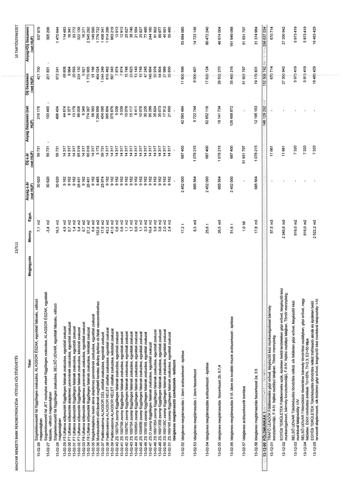

| Tétel | Megjegyzés | Menny. | Egys. | Anyag e.ár (net HUF) | Díj e.ár (net HUF) | Anyag összesen (net HUF) | Díj összesen (net HUF) | Anyag+Díj összesen (net HUF) |
|---|---|---|---|---|---|---|---|---|
| 13-01-54 Alaplemez ALAGSOR DÉL peremének zsaluzása, egyoldali zsaluzat | NaN | 2,7 | m2 | 9 162 | 14 317 | 24 738 | 38 656 | 63 393 |
| 13-01-55 Padlócsatorna ALAGSOR DÉL peremének zsaluzása, egyoldali zsaluzat | NaN | 6,6 | m2 | 10 716 | 16 306 | 60 008 | 91 313 | 151 322 |
| 13-01-56 Alaplemez ALAGSOR ÉSZAK peremének zsaluzása, egyoldali zsaluzat | NaN | 6,9 | m2 | 9 162 | 14 317 | 62 944 | 98 355 | 161 300 |
| 13-01-57 Alaplemez BELSŐ UDVAR peremének zsaluzása, egyoldali zsaluzat | NaN | 2,1 | m2 | 9 162 | 14 317 | 19 240 | 30 066 | 49 306 |
| 13-01-58 Alaplemez BELSŐ UDVAR peremének zsaluzása, egyoldali zsaluzat | NaN | 4,3 | m2 | 29 870 | 46 517 | 129 040 | 200 953 | 329 993 |
| 13-01-59 Szigetelésvezető fal függőleges zsaluzása, ALAGSOR ÉSZAK, egyoldali falzsalu, változó magasságban | NaN | 35,4 | m2 | 29 870 | 59 731 | 1 058 397 | 2 116 267 | 3 174 574 |
| 13-01-60 Szigetelésvezető fal JET oszlopba vésett függőleges zsaluzása, ALAGSOR ÉSZAK, egyoldali falzsalu, változó magasságban | NaN | 11,9 | m2 | 29 870 | 59 731 | 356 655 | 711 993 | 1 068 048 |
| 13-01-61 Szigetelésvezető fal függőleges zsaluzása, ALAGSOR DÉL, egyoldali falzsalu, változó magasságban | NaN | 29,2 | m2 | 29 870 | 59 731 | 872 215 | 1 744 143 | 2 616 358 |
| 13-01-62 Szigetelésvezető fal függőleges zsaluzása, BELSŐ UDVAR, egyoldali falzsalu, változó magasságban | NaN | 86,6 | m2 | 29 870 | 59 731 | 2 586 177 | 5 171 505 | 7 757 681 |
| 13-02-00 ÉPÍTÉSI SEGÉDSZERKEZETEK - VÁLLALKOZÓI KIEGÉSZÍTŐ TÉTELEK | NaN | NaN | NaN | 0 | 0 | 274 438 489 | 183 959 401 | 458 397 890 |
| 13-02-01 F1 Liftakna süllyeszték függőleges falainak zsaluzása, kétoldali zsaluzat | NaN | 8,9 | m2 | 10 716 | 16 306 | 95 263 | 144 960 | 240 223 |
| 13-02-02 F2 Liftakna süllyeszték függőleges falainak zsaluzása, kétoldali zsaluzat | NaN | 4,2 | m2 | 10 716 | 16 306 | 45 444 | 69 156 | 114 600 |
| 13-02-03 F3 Liftakna süllyeszték függőleges falainak zsaluzása, kétoldali zsaluzat | NaN | 5,0 | m2 | 9 162 | 14 317 | 46 095 | 71 011 | 117 106 |
| 13-02-04 F4 Liftakna süllyeszték függőleges falainak zsaluzása, kétoldali zsaluzat | NaN | 5,1 | m2 | 10 716 | 16 306 | 54 683 | 83 209 | 137 892 |
| 13-02-05 F11 Liftakna süllyeszték függőleges falainak zsaluzása, kétoldali zsaluzat /RÉSZBEN FENNMARADÓ/ | NaN | 5,5 | m2 | 9 162 | 14 317 | 50 676 | 79 186 | 129 861 |
| 13-02-06 Magántulajdonú leadó akna függőleges falainak zsaluzása, kétoldali zsaluzat | NaN | 91,5 | m2 | 10 716 | 16 306 | 980 685 | 1 492 289 | 2 472 974 |
| 13-02-07 Magántulajdonú leadó akna függőleges falainak zsaluzása, egyoldali zsaluzat | NaN | 1,5 | m2 | 9 162 | 14 317 | 13 853 | 21 647 | 35 500 |
| 13-02-08 ZS 100/75D zsomp függőleges falainak zsaluzása, kétoldali zsaluzat | NaN | 1,6 | m2 | 10 716 | 16 306 | 17 145 | 26 090 | 43 235 |
| 13-02-09 ZS 100/75B zsomp függőleges falainak zsaluzása, kétoldali zsaluzat | NaN | 0,6 | m2 | 9 162 | 14 317 | 5 497 | 8 590 | 14 087 |
| 13-02-10 ZS 100/75C zsomp függőleges falainak zsaluzása, kétoldali zsaluzat | NaN | 3,2 | m2 | 10 716 | 16 306 | 34 290 | 52 179 | 86 470 |
| 13-02-11 ZS 100/75A zsomp függőleges falainak zsaluzása, kétoldali zsaluzat | NaN | 3,2 | m2 | 10 716 | 16 306 | 34 719 | 52 831 | 87 550 |
| 13-02-12 ZS 100/85B zsomp függőleges falainak zsaluzása, kétoldali zsaluzat | NaN | 4,0 | m2 | 9 162 | 14 317 | 36 282 | 56 694 | 92 976 |
| 13-02-13 ZS 100/165 zsomp függőleges falainak zsaluzása, kétoldali zsaluzat | NaN | 1,6 | m2 | 10 716 | 16 306 | 17 360 | 26 416 | 43 775 |
| 13-02-14 ZS.O zsomp függőleges falainak zsaluzása, kétoldali zsaluzat | NaN | 1,1 | m2 | 9 162 | 14 317 | 10 038 | 15 686 | 25 723 |
| 13-02-15 ZS.160/135A zsomp függőleges falainak zsaluzása, kétoldali zsaluzat | NaN | 3,5 | m2 | 10 716 | 16 306 | 37 394 | 56 353 | 93 747 |
| 13-02-16 ZS.160/135B zsomp függőleges falainak zsaluzása, kétoldali zsaluzat | NaN | 5,9 | m2 | 9 162 | 14 317 | 53 873 | 84 182 | 138 056 |
| 13-02-17 ZS.160/135C zsomp függőleges falainak zsaluzása, kétoldali zsaluzat | NaN | 4,5 | m2 | 10 716 | 16 306 | 48 007 | 73 051 | 121 057 |
| 13-02-18 ZS.160/165 zsomp függőleges falainak zsaluzása, kétoldali zsaluzat | NaN | 9,6 | m2 | 9 162 | 14 317 | 87 885 | 137 297 | 225 182 |
| 13-02-19 ZS.160/90 zsomp függőleges falainak zsaluzása, kétoldali zsaluzat | NaN | 28,6 | m2 | 10 716 | 16 306 | 305 600 | 467 651 | 773 252 |
| 13-02-20 CS1 csapadékvíz tároló függőleges falainak zsaluzása, egyoldali zsaluzat | NaN | 2,8 | m2 | 9 162 | 14 317 | 25 196 | 39 371 | 64 567 |
| 13-02-21 CS1 csapadékvíz tároló függőleges falainak zsaluzása, egyoldali zsaluzat | NaN | 36,2 | m2 | 10 716 | 16 306 | 387 686 | 589 950 | 977 636 |
| 13-02-22 CS2 csapadékvíz tároló függőleges falainak zsaluzása, egyoldali zsaluzat | NaN | 11,5 | m2 | 9 162 | 14 317 | 104 906 | 163 926 | 268 833 |
| 13-02-23 Alaplemez ALAGSOR DÉL peremének zsaluzása, egyoldali zsaluzat | NaN | -1,2 | m2 | 9 162 | 14 317 | -11 178 | -17 466 | -28 644 |
| 13-02-24 Alaplemez ALAGSOR ÉSZAK peremének zsaluzása, egyoldali zsaluzat | NaN | -2,0 | m2 | 9 162 | 14 317 | -18 599 | -29 063 | -47 662 |
| 13-02-25 Alaplemez BELSŐ UDVAR peremének zsaluzása, egyoldali zsaluzat | NaN | 7,1 | m2 | 30 620 | 59 731 | 216 178 | 421 700 | 637 879 |
| 13-02-26 Szigetelésvezető fal függőleges zsaluzása, ALAGSOR ÉSZAK, egyoldali falzsalu, változó magasságban | NaN | -3,4 | m2 | 30 620 | 59 731 | -103 465 | -201 831 | -305 296 |
| 13-02-27 Szigetelésvezető fal JET oszlopba vésett függőleges zsaluzása, ALAGSOR ÉSZAK, egyoldali falzsalu, változó magasságban | NaN | 16,3 | m2 | 30 620 | 59 731 | 498 404 | 972 241 | 1 470 644 |
| 13-02-28 Szigetelésvezető fal függőleges zsaluzása, BELSŐ UDVAR, egyoldali falzsalu, változó magasságban | NaN | 4,9 | m2 | 9 162 | 14 317 | 44 674 | 69 808 | 114 483 |
| 13-02-29 F5 Liftakna süllyeszték alaplemez peremének zsaluzása, egyoldali zsaluzat | NaN | 0,7 | m2 | 9 162 | 14 317 | 6 377 | 9 964 | 16 341 |
| 13-02-30 F7 Liftakna süllyeszték alaplemez peremének zsaluzása, egyoldali zsaluzat | NaN | 1,4 | m2 | 9 162 | 14 317 | 13 179 | 20 593 | 33 772 |
| 13-02-31 F7 Liftakna süllyeszték függőleges falainak zsaluzása, kétoldali zsaluzat | NaN | 14,8 | m2 | 28 431 | 65 018 | 419 638 | 959 660 | 1 379 298 |
| 13-02-32 F8 Liftakna süllyeszték alaplemez peremének zsaluzása, egyoldali zsaluzat | NaN | 0,7 | m2 | 9 162 | 14 317 | 6 349 | 9 923 | 16 271 |
| 13-02-33 F8 Liftakna süllyeszték alaplemez peremének zsaluzása, kétoldali zsaluzat | NaN | 27,2 | m2 | 28 431 | 65 018 | 774 387 | 1 770 905 | 2 545 292 |
| 13-02-34 F8 Liftakna süllyeszték függőleges falainak zsaluzása, kétoldali zsaluzat | NaN | 6,4 | m2 | 9 162 | 14 317 | 58 363 | 91 198 | 149 560 |
| 13-02-35 Magántulajdonú leadó akna alaplemez peremének zsaluzása, egyoldali zsaluzat | NaN | 152,6 | m2 | 8 485 | 3 172 | 1 294 699 | 484 024 | 1 778 722 |
| 13-02-36 Munkavédelmi előírásoknak megfelelő keretes állvány építése vb.falak vasszereléséhez | NaN | 17,5 | m2 | 25 624 | 58 724 | 448 026 | 1 026 822 | 1 474 848 |
| 13-02-37 Padlócsatorna ALAGSOR DÉL peremének zsaluzása, egyoldali zsaluzat | NaN | 43,4 | m2 | 9 162 | 14 317 | 395 804 | 618 482 | 1 014 286 |
| 13-02-38 Padlócsatorna ALAGSOR KELET peremének zsaluzása, egyoldali zsaluzat | NaN | 41,0 | m2 | 9 162 | 14 317 | 375 876 | 587 343 | 963 219 |
| 13-02-39 Padlócsatorna ALAGSOR KELET oldalfal zsaluzása, kétoldali zsaluzat | NaN | 0,6 | m2 | 9 162 | 14 317 | 5 039 | 7 874 | 12 913 |
| 13-02-40 ZS 100/75A zsomp függőleges falainak zsaluzása, egyoldali zsaluzat | NaN | 0,6 | m2 | 9 162 | 14 317 | 5 039 | 7 874 | 12 913 |
| 13-02-41 ZS 100/75B zsomp függőleges falainak zsaluzása, egyoldali zsaluzat | NaN | 1,1 | m2 | 9 162 | 14 317 | 10 078 | 15 748 | 25 827 |
| 13-02-42 ZS 100/75C zsomp függőleges falainak zsaluzása, egyoldali zsaluzat | NaN | 1,7 | m2 | 9 162 | 14 317 | 15 117 | 23 623 | 38 740 |
| 13-02-43 ZS 100/75D zsomp függőleges falainak zsaluzása, egyoldali zsaluzat | NaN | 0,9 | m2 | 9 162 | 14 317 | 8 411 | 13 143 | 21 554 |
| 13-02-44 ZS 100/85A zsomp függőleges falainak zsaluzása, egyoldali zsaluzat | NaN | 1,1 | m2 | 9 162 | 14 317 | 10 078 | 15 748 | 25 827 |
| 13-02-45 ZS 100/85B zsomp függőleges falainak zsaluzása, egyoldali zsaluzat | NaN | 3,3 | m2 | 9 162 | 14 317 | 30 235 | 47 245 | 77 480 |
| 13-02-46 ZS 100/165 zsomp függőleges falainak zsaluzása, egyoldali zsaluzat | NaN | 10,4 | m2 | 9 162 | 14 317 | 95 285 | 148 896 | 244 181 |
| 13-02-47 ZS.O zsomp függőleges falainak zsaluzása, egyoldali zsaluzat | NaN | 3,9 | m2 | 9 162 | 14 317 | 35 824 | 55 978 | 91 802 |
| 13-02-48 ZS.160/135A zsomp függőleges falainak zsaluzása, egyoldali zsaluzat | NaN | 3,8 | m2 | 9 162 | 14 317 | 35 073 | 54 804 | 89 877 |
| 13-02-49 ZS.160/135B zsomp függőleges falainak zsaluzása, egyoldali zsaluzat | NaN | 2,0 | m2 | 9 162 | 14 317 | 17 912 | 27 989 | 45 901 |
| 13-02-50 ZS.160/135C zsomp függőleges falainak zsaluzása, egyoldali zsaluzat | NaN | 2,4 | m2 | 9 162 | 14 317 | 21 650 | 33 830 | 55 480 |
| 13-02-51 Ideiglenes megtámasztó szerkezetek - tetőszint | NaN | 17,2 | t | 2 452 000 | 687 400 | 42 093 464 | 11 800 586 | 53 894 080 |
| 13-02-52 Ideiglenes megtámasztás I. ütem acélszerkezet - építése | NaN | 8,3 | m3 | 689 564 | 1 078 215 | 5 722 744 | 9 001 401 | 14 724 146 |
| 13-02-53 Ideiglenes megtámasztás acélszerkezet - építése | NaN | 25,6 | t | 2 452 000 | 687 400 | 62 852 116 | 17 620 124 | 80 472 240 |
| 13-02-54 Ideiglenes megtámasztás faszerkezet - építése | NaN | 26,5 | m3 | 689 564 | 1 078 215 | 18 141 734 | 28 532 270 | 46 674 004 |
| 13-02-55 Ideiglenes megtámasztás I.-IV. ütem és további részek acélszerkezet - építése | NaN | 51,6 | t | 2 452 000 | 687 400 | 126 488 872 | 35 490 216 | 161 949 088 |
| 13-02-56 Ideiglenes acélszerkezet bontása | NaN | 1,0 | klt | 0 | 51 931 797 | 0 | 51 931 797 | 51 931 797 |
| 13-02-57 Ideiglenes faszerkezet bontása 2a, 3, 5 | NaN | 17,8 | m3 | 689 564 | 1 078 215 | 12 195 153 | 19 179 831 | 31 374 984 |
| 13-12-00 FÖLDMUNKÁK 1. | NaN | NaN | NaN | 0 | 0 | 146 128 292 | 152 508 742 | 298 637 034 |
